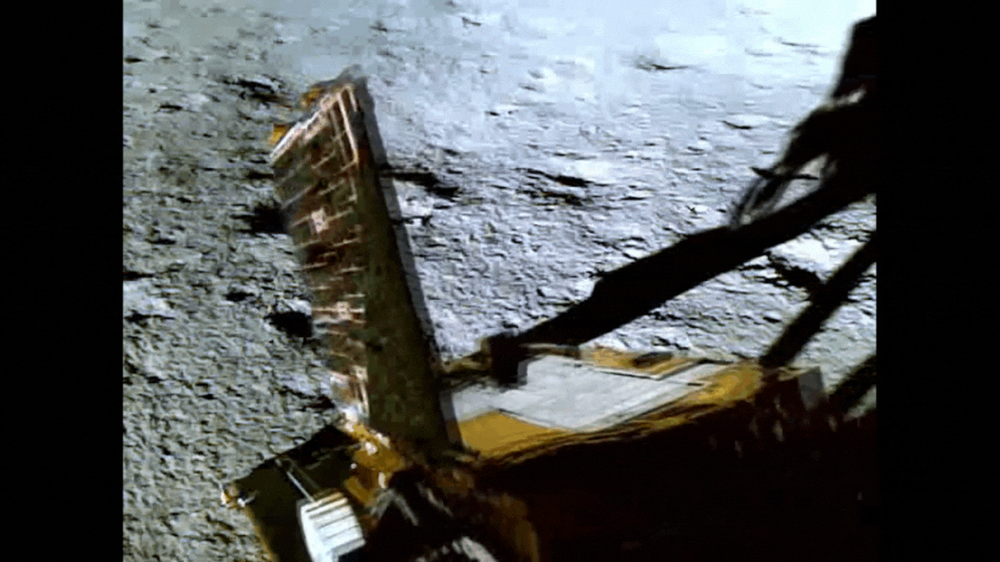
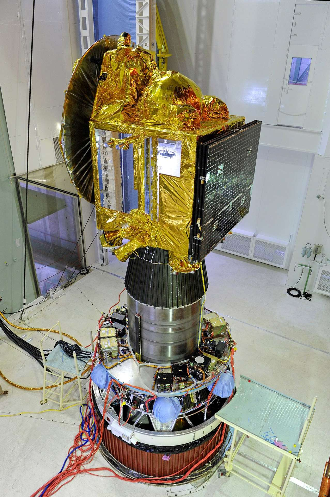
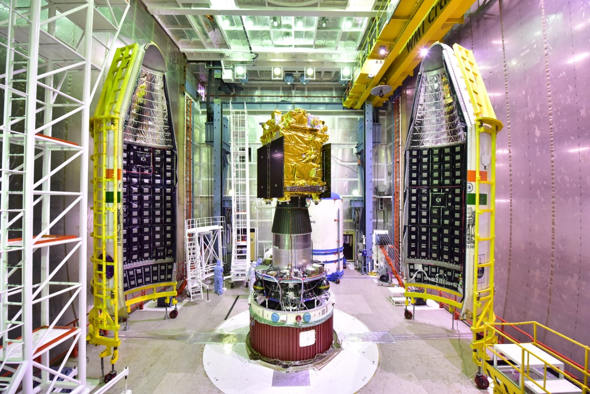

India in Space
The Beginnings of ISRO
India’s space journey began with the establishment of ISRO in 1969. The first satellite, Aryabhata, was launched in 1975, marking India's entry into space technology.

Chandrayaan and Lunar Exploration
Chandrayaan-1, launched in 2008, confirmed the presence of water molecules on the Moon. Chandrayaan-2 followed in 2019, and Chandrayaan-3 successfully landed on the Moon in 2023.
Mangalyaan - The Mars Orbiter Mission
In 2013, India became the first country to reach Mars in its first attempt with Mangalyaan, showcasing cost-effective space exploration.
Gaganyaan - India's First Human Space Mission
ISRO is planning to send Indian astronauts to space under the Gaganyaan mission, marking a historic milestone in India's space exploration.

Future of India's Space Program
ISRO is working on ambitious projects like Aditya-L1 (a mission to study the Sun), new lunar and planetary explorations, and space tourism initiatives.
